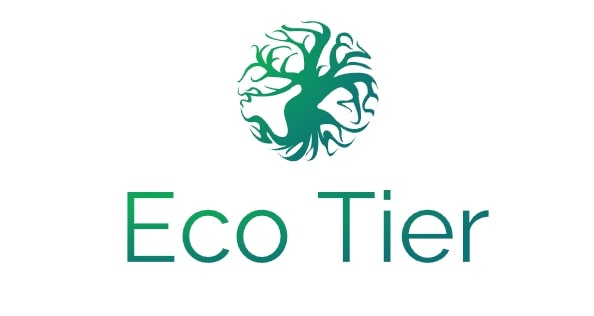

Using Eco Tier offers numerous benefits for both consumers and brands. It provides clear, easy-to-understand sustainability icons that help consumers make informed, eco-friendly shopping choices, promoting conscious consumerism. This transparency fosters a culture of responsibility, making it simpler to identify products with a lower environmental impact, reducing waste, carbon emissions, and other environmental harms. For brands, Eco Tier supports and highlights sustainable practices, helping them stand out in a competitive market and meet growing consumer demand for transparency.
The simple integration of Eco Tier into retail systems encourages more widespread adoption of sustainable practices, driving industry-wide change. By guiding consumers toward greener choices, Eco Tier contributes to long-term global goals like net-zero emissions and a circular economy, where resources are conserved, waste is minimized, and sustainability becomes second nature.